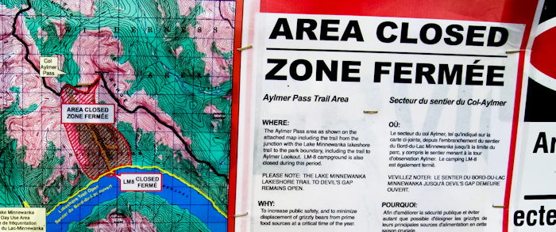

into the Lakes
Day-off 인 어느날, 갑자기 호수가 보고싶어서 옷을 입고 장갑과 모자를 챙기고 밖에 굴러다니는 자전거를 끌고 직원 숙소를 나섰다. 이전에 런들을 탈 때 Banff Information Center에서 받아놓은 트래킹 지도를 펼쳤다. 이전에 가보고 싶었던 Lake Minnewanka, Two Jack Lake, Vermilion Lake 세곳을 돌아보고 싶었다. 그리고 페달을 힘차게 밟았다.
다운타운에서 수통에 물을 채우고 초콜릿바 3개도 샀다. 초콜릿바를 보니 런들 생각이 났다. 런들 탈 때 초콜릿바가 있었으면 좀 더 편하게 탈 수 있었을 거라는 생각이 들었다. 오렌지 하나로 런들을 탄 생각이 났다. 그 때는 내가 왜 그런 무모한 도전을 했을까? 산을 타기전에 초콜릿바를 안샀다는 것을 발견했을 때 다시 초콜릿 바를 사고 올라갔으면 그래도 덜 힘겹게 정상을 밟았을것이다.
Lake Minnewanka

자전거의 기어를 1단으로 놓고 가장 빠른 속도로 페달을 밟았다. 목적지인 Minnewanka 까지는 약 12km , 평지만 계속 된다면 쉽겠지만 고속도로를 지나면 오르막길이 계속 된다. 페달을 밟고 밟고 계속 밟으며 땀을 쏟으며 밟기를 50여분, 겨우 Lake Minnewanka 에 도착했다.
Minnewanka가 다른 호수와 동일한 자연 호수인줄 알았는데 인공적으로 만들어진 호수였다. 아주 긴 댐이 강을 막아서 생겨난 Lake Minnewanka , 주변을 한바퀴 도는 것만으로도 수십 km가 되는 엄청난 호수, 그 주위에 둘러 솟아난 로키의 산들은 캐나다의 대자연을 그대로 보여주고 있었다. 로키의 대자연, 바로 그것을 위해서 이 캐나다에 왔다. 그 로키 안에서 내가 땀흘리며 페달을 밟고, 걷고, 산을 오른다.

자전거를 길 옆에 올려놓고 걷기 시작했다. 목표지점은 Aylmer Pass , 거리는 약 12km, 왕복은 24km 라는 만만찮은 거리다. 5~6시간이 걸리는 거리다. 이번길은 런들처럼 올라가는 길이 아니였다. 평지를 걷는 길이기에 어렵게 느껴지지는 않았다. 하늘에 구름이 가득했다. 마치 곧 눈이 내려도 이상하지 않을 날씨였다. 몸은 가벼웠다. 발걸음이 점점 빨라지며 속도를 올렸다. 잔잔한 호수, 그리고 나 이외에는 그 누구의 소리도 들리지 않았다. 그러나 외롭지 않았다. 고독을 느끼지도 않았다. 그냥 내가 그곳에 있는 것일 뿐이고 내가 로키의 일부분일 뿐이다.

한시간 30분을 걸었다. 8km를 걸어서 Lm.8 야영지에 도착했다. 이곳에서 Aylmer Pass가 갈라진다. 계속 Minnewanka를 따라 걷던지 3,200m 가까이 되는 Aylmer 산을 오르던지 선택을 한다. 이곳에서 Aylmer 중간부분에서 Minnewanka를 구경할 수 있는 곳이 있어서 Aylmer Pass를 따라 올라가려 했다. 그러나 입산 통제가 걸려있었다. 한 여름이 지난 상태라 Grizzly Bear의 활동이 활발해져서 통제되고 있었다. 아쉬웠지만 이대로 발걸음을 돌릴 수 밖에 없었다. 이 이상 Minnewanka를 따라 걸으려면 괜찮은 곳을 만나기까지 25km를 더 걸어야 한다. 그러면 돌아오지 못한다 ㅡㅡ; 간단히 물과 머핀(빵)을 먹고 다시 걸어왔던 8km를 돌아갔다.
Two Jack Lake
입구까지 오니 3시간이 약간 넘게 흘렀다. 다시 자전거를 타고 다음 목적지인 Two Jack 호수로 달렸다. 중간에 보이는 Mt.Cascade는 Cascade에 오르고 싶은 생각이 간절히 들 정도로 멋졌다. 이제 자전거를 타고 언덕길을 내려간다. 왼쪽으로 Minnewanka에서 흘러나온 물줄기가 보인다. 최저기어단에서 힘차게 페달을 밟는다. 앞의 코너를 돌자 왼편으로 수려한 Two Jack 호수가 나타난다. Minnewanka 같이 크지는 않지만 주변의 경관이 아담하면서 수려하다. Minnewanka의 웅장한 멋과는 또 다른 멋이 느껴지곳이 Two Jack 호수이다.
Two Jack 의 호숫가에 앉았다. 날씨는 더할 나위 없이 좋았다. 바람도 선선하게 불어오고 햇살에 반짝이는 Two Jack 호수는 카메라로 담지 못할 최고의 장면이었다. 로키 이외에 이런 자연의 아름다움을 느낄 곳이 또 있을까? 주변을 둘러싸고 있는 3000m의 산들과 그 사이에 울창한 숲들 그리고 자연을 사랑하는 사람들, 그 모든 것이 로키를 만들어낸다. 그리고 Two Jack 호수를 만들어낸다. Two Jack 을 나서면서 일본인 부부를 만났다. 호숫가에서 혼자 앉아서 초콜릿 바와 사과를 먹는 걸 보고 측은했던 모양인지 어떤지 먼저 이야기를 걸어왔다. 일본인이냐고 묻길래 한국인이라고 했더니 미안하다는 말과 함께 이런 저런 이야기를 했다. 밴프에 산다고 하니, 공부하기 힘들지 않냐고 하더라. '젋으면 다 어학연수인가보군..' 이라는 생각과 함께 밴프에서 일하면서 생활한다고 하니 그제서야 조금은 놀란다. 워킹홀리데이를 설명해 주고 인사를 한 후 자전거를 타고 Two Jack을 벗어났다.
다음목표인 Vermilion 호수에 가기 위해선 Trans-Canada Highway를 타고 가야한다. Two Jack에서 Trans-Canada Highway까지는 내리막길이라 아주 즐거운 마음으로 달렸다. 중간에 길에 누워서 사진도 찍고(왼쪽 사진) 들고 온 과일도 먹었다. 먹을 것을 든든하게 준비하니 걱정이 없었다. 상태가 좋지 않은 (앞 브레이크도 없고 기어 변경도 잘 안되는 ) 자전거를 계속 타느라 엉덩이도 아프지만 그래도 기분은 상쾌했다.
Vermilion Lakes
Trans-Canada Highway를 달리고 Banff 방향으로 접어들다 오른쪽 길로 빠지면 제 1 Vermilion 호수가 보인다. Vermilion 호수는 3개의 호수로 이어져있다. Vermilion 에서 가장 보고싶었던 것은 호수에 비치는 Mt.Rundle의 반영이었는데 바람이 불어서 아쉽게도 반영은 찍지 못했다. Vermilion은 밴프 바로 앞에 있는 것이니까 다음을 노려야겠다.
이젠 다리 힘도 거의 다 빠져나갔다. 자전거를 타고 밴프센터로 올라갔다. 자전거를 타고 올라가는 게 쉬운 일은 아니였다. 총 자전거로 40km를 달렸다. 엉덩이도 아프고 다리 근육이 운다. 그러나 내가 로키 안에 있다는 것을 느끼는 그 기분은 모든 몸의 괴로움을 충분히 보상하고도 남았다. 내가 로키산맥 안에 있다는 것이 기쁘다. 그리고 주변에 이렇게 아름다운 곳들이 많이 있어서 기쁘다.